{kind=link}
$xlog
[1] FALSE
$ylog
[1] FALSE
$adj
[1] 0.5
$ann
[1] TRUE
$ask
[1] FALSE
$bg
[1] "white"
$bty
[1] "o"
$cex
[1] 1
$cex.axis
[1] 1
$cex.lab
[1] 1
$cex.main
[1] 1.2
$cex.sub
[1] 1
$cin
[1] 0.15 0.20
$col
[1] "black"
$col.axis
[1] "black"
$col.lab
[1] "black"
$col.main
[1] "black"
$col.sub
[1] "black"
$cra
[1] 28.8 38.4
$crt
[1] 0
$csi
[1] 0.2
$cxy
[1] 0.01712329 0.06329115
$din
[1] 9.999999 4.999999
$err
[1] 0
$family
[1] ""
$fg
[1] "black"
$fig
[1] 0 1 0 1
$fin
[1] 9.999999 4.999999
$font
[1] 1
$font.axis
[1] 1
$font.lab
[1] 1
$font.main
[1] 2
$font.sub
[1] 1
$lab
[1] 5 5 7
$las
[1] 0
$lend
[1] "round"
$lheight
[1] 1
$ljoin
[1] "round"
$lmitre
[1] 10
$lty
[1] "solid"
$lwd
[1] 1
$mai
[1] 1.02 0.82 0.82 0.42
$mar
[1] 5.1 4.1 4.1 2.1
$mex
[1] 1
$mfcol
[1] 1 1
$mfg
[1] 1 1 1 1
$mfrow
[1] 1 1
$mgp
[1] 3 1 0
$mkh
[1] 0.001
$new
[1] FALSE
$oma
[1] 0 0 0 0
$omd
[1] 0 1 0 1
$omi
[1] 0 0 0 0
$page
[1] TRUE
$pch
[1] 1
$pin
[1] 8.759999 3.159999
$plt
[1] 0.082 0.958 0.204 0.836
$ps
[1] 12
$pty
[1] "m"
$smo
[1] 1
$srt
[1] 0
$tck
[1] NA
$tcl
[1] -0.5
$usr
[1] 0 1 0 1
$xaxp
[1] 0 1 5
$xaxs
[1] "r"
$xaxt
[1] "s"
$xpd
[1] FALSE
$yaxp
[1] 0 1 5
$yaxs
[1] "r"
$yaxt
[1] "s"
$ylbias
[1] 0.2Lecture 12: Multiple Views
Brian J. Smith
2026-03-05
Multiple Views
The beginning of this lecture is based on Chapter 12 of Visualization Analysis & Design.
“Facet into Multiple Views”
For this lecture, I’m going to start with some principles from the VAD Text, then transition over to creating multi-panel figures in R.

Facet into Multiple Views
Facet into Multiple Views
Decisions to Make
- Juxtapose or superimpose?
- Share encoding or use different encoding?
- Use linked highlighting?
- Share data or show different data?
- All
- Some
- None
Share navigation?
Juxtapose or Superimpose?
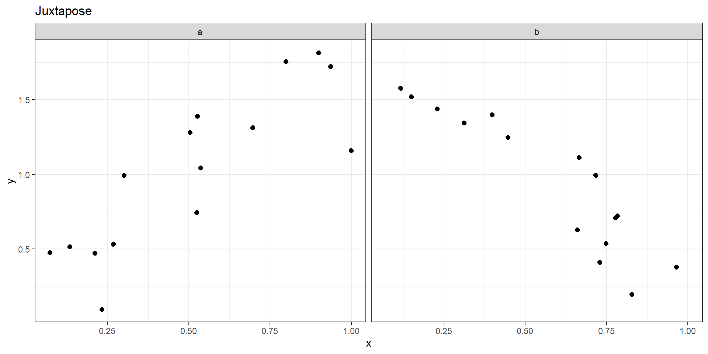
Juxtapose or Superimpose?
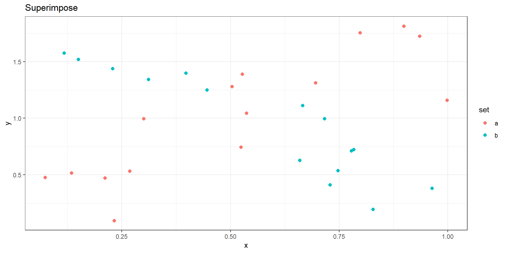
Juxtapose or Superimpose?
Juxtapose
- Easy to compare (“Eyes beat Memory”).
- Can use a different encoding for each one.
- Can support multiple tasks.
- Each facet gets a fraction of the space.
- Two facets get only half the display area each.
Superimpose
- Easy to compare (“Eyes beat Memory”).
- Constrains choices for visual encoding.
- The two facets must be visually distinguishable layers.
- Usually limited to 2 or 3 layers.
- Does not require more display area.
Share Encoding?
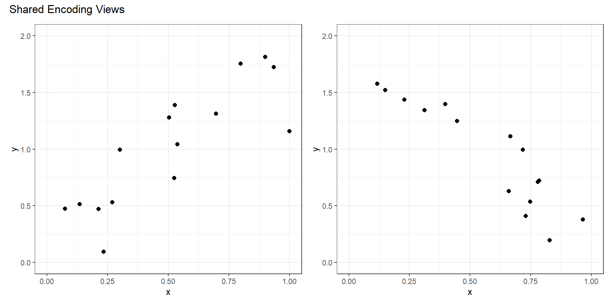
Share Encoding?
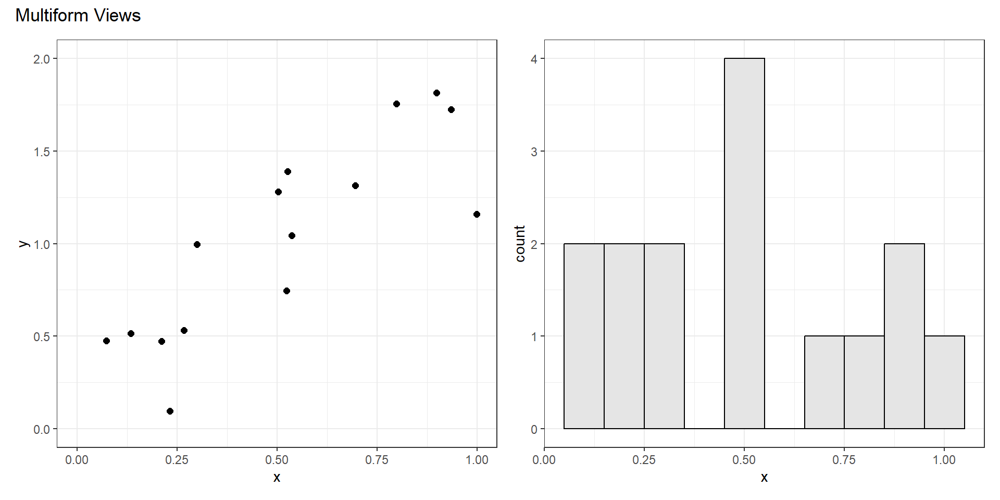
Share Encoding?
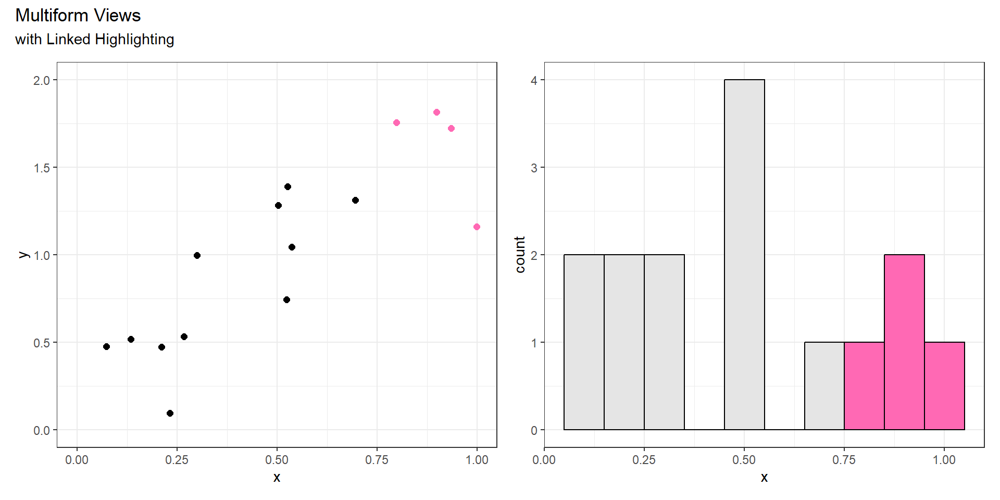
Share Encoding?
Shared Encoding
- All channels have an identical visual encoding.
- Simple to understand each panel.
Multiform
- Some, but not all channels are shared.
- Could share one spatial dimension but not another.
- Could use different marks or channels.
- Linked highlighting can be useful to show corresponding data in both views.
- Particularly useful in an interactive setting.
Share Data?
- Shared data (all): both views show all the data.
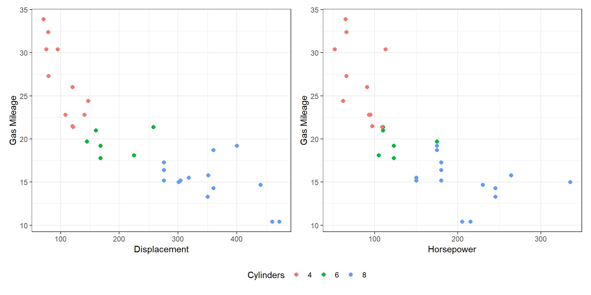
Share Data?
- Overview-detail (some): one view shows all the data, the other shows detail.
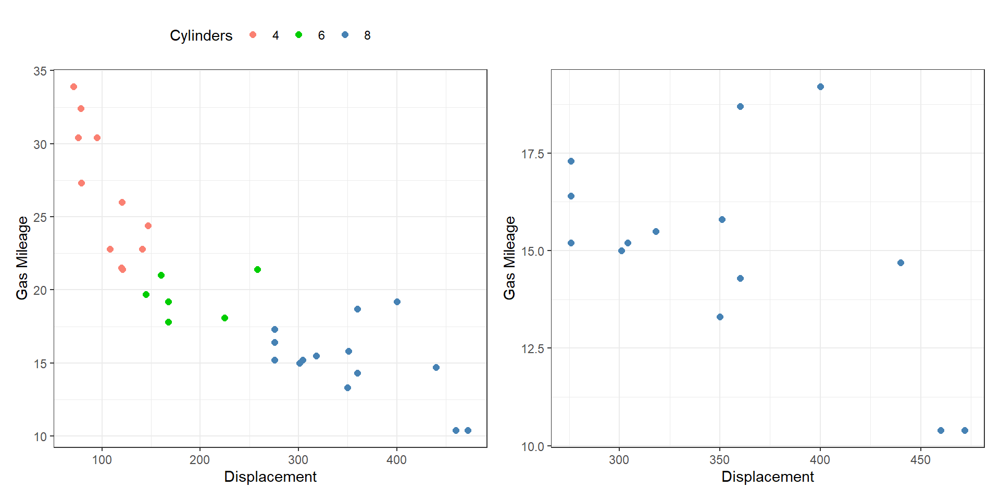
Share Data?
- Small multiples (none): one view shows one subset, the other shows a different subset.
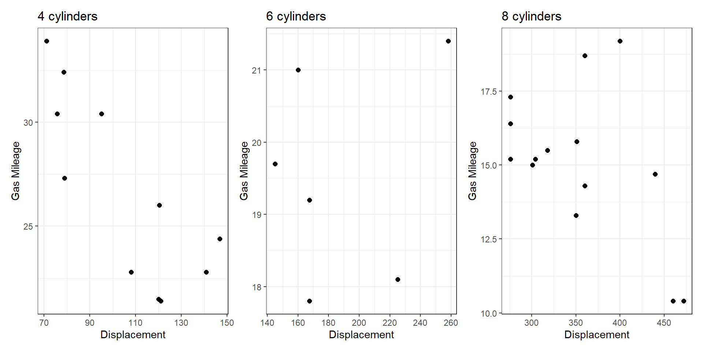
Share Encoding/Data?
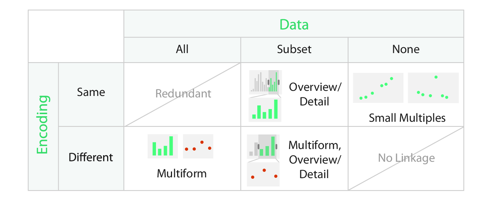
Multi-panel Figures in R
Multi-panel Figures in R
There are many ways to compose multi-panel figures in R, including methods using base R graphics,
ggplot2, accessory packages forggplot2objects, and other packages.We’re just scratching the surface here, but I want to give you three different tools to get started with:
- base R multi-panel plots,
- faceting with
ggplot2, - composing multi-panel plots with
patchwork.
Some other packages you might want to look into:
Multi-panel: base R
Multi-panel: base R
- Two methods for creating multi-panel figures using base R:
- Set graphical parameters using
par(), - Use
layout().
- Set graphical parameters using
Multi-panel: base R par()
- Graphics devices in R have default graphical parameters.
- You can print those parameters with
par()(no arguments). - You can also change those parameters with
par()(by adding arguments).
Multi-panel: base R par()
- If you’re going to change the parameters inside a function, it is best practice to store and restore the defaults.
Multi-panel: base R par()
- To create a multi-panel figure, change the graphical parameters
mfrowormfcol.- Specifies the number of rows and columns in the display:
c(nr, nc) - Multiple calls to
plot()are drawn in subsequent rows/columnsmfrowcauses the plots to be drawn by rowsmfcolcauses the plots to be drawn by columns
- Specifies the number of rows and columns in the display:
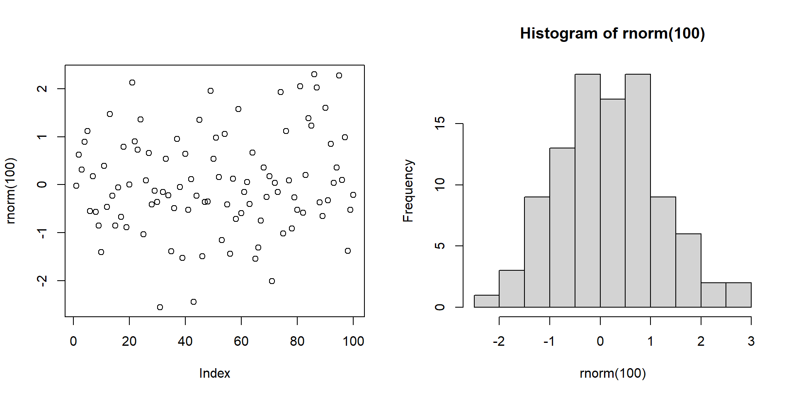
Multi-panel: base R par()
- Use of
mfrow
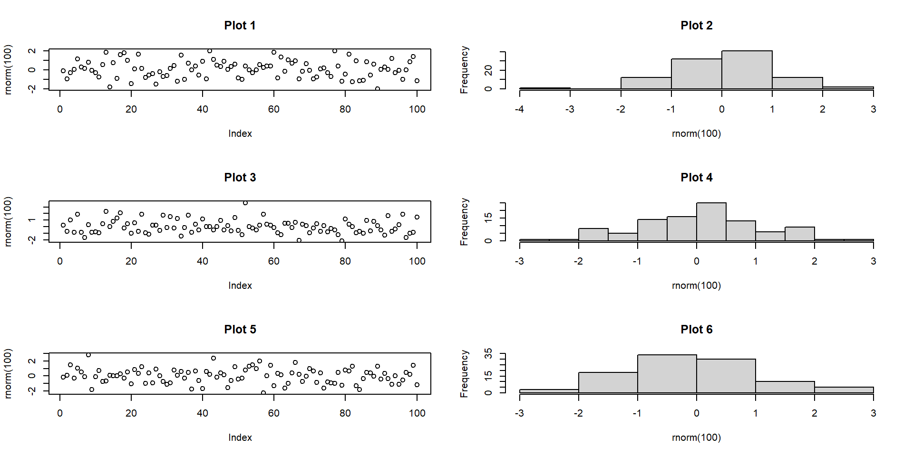
Multi-panel: base R par()
- Use of
mfcol
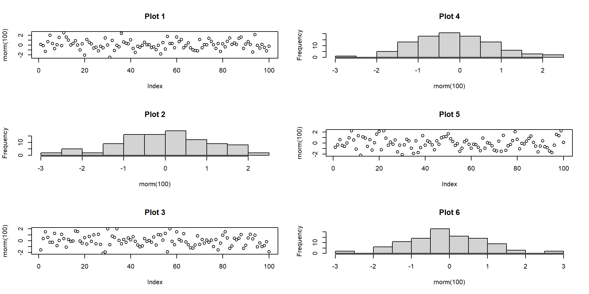
Multi-panel: base R layout()
- Using
layout()allows finer control over the layout using a matrix.- For example, you can allow a single plot to take up multiple slots.
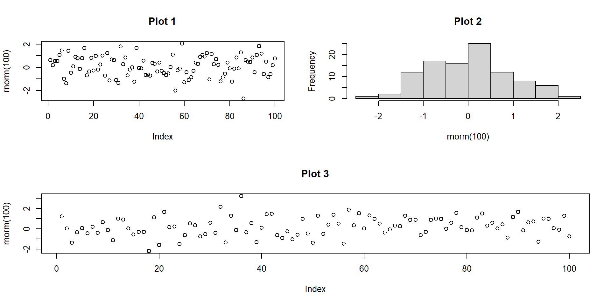
Multi-panel: base R layout()
- There is also function
layout.show()which will show the current layout for planning something complex.
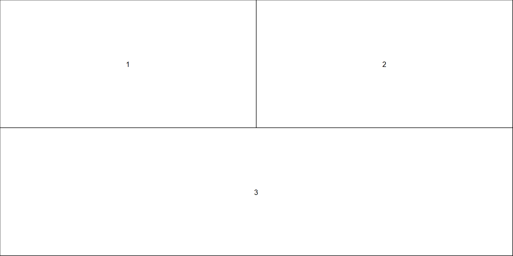
Faceting with ggplot2
Faceting with ggplot2
- We’ve already seen some examples of using the
facet_*()functions inggplot2. - Let’s make sure we make the different options clear here.
facet_wrap()facet_grid()facet_null()(for the sake of completeness)
Faceting with ggplot2
facet_wrap()wraps a 1D sequence of panels to fit in the window.
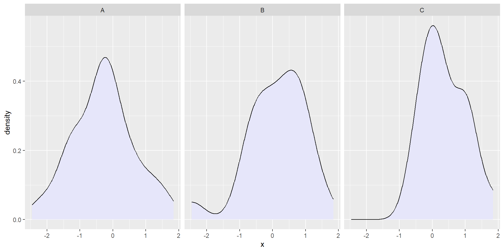
Faceting with ggplot2
facet_grid()forms a matrix of panels defined by rows and columns.
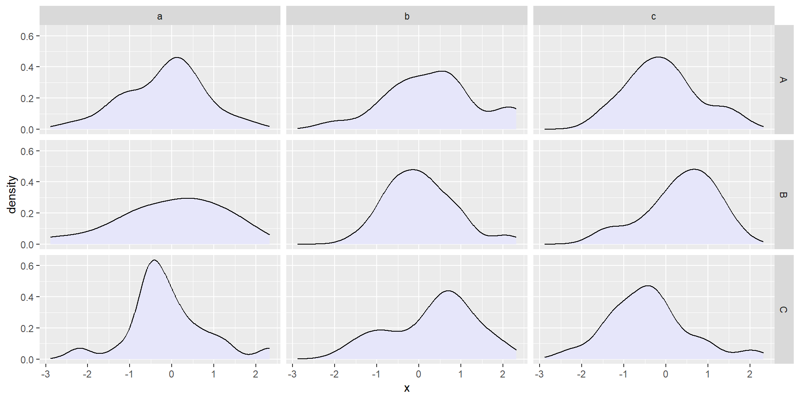
Faceting with ggplot2
facet_null()means no faceting, and can be used to override one of the others.
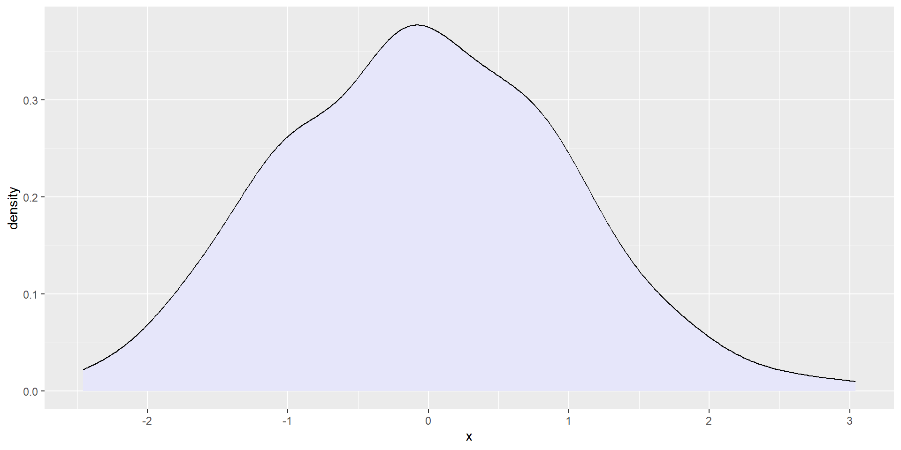
Composing with patchwork
Composing with patchwork
The goal of
patchworkis to make it ridiculously simple to combine separate ggplots into the same graphic…
Composing with patchwork
- The main thing that makes it “ridiculously simple” is the arithmetic operators to combine plots.
- Combine in a row with
+ - Combine in a column with
/ - Group plots to increase complexity with
()
- Combine in a row with
Composing with patchwork
- Create 3 plots, named
p1,p2, andp3to demonstrate.
p1 <- starwars %>%
filter(!is.na(gender)) %>%
ggplot() +
geom_boxplot(aes(x = gender, y = height))
p2 <- starwars %>%
filter(mass < 500) %>%
ggplot() +
geom_point(aes(x = height, y = mass))
p3 <- starwars %>%
filter(!is.na(birth_year)) %>%
ggplot() +
geom_density(aes(x = birth_year), fill = "#ff000050")Composing with patchwork
- Combine in a row with
+
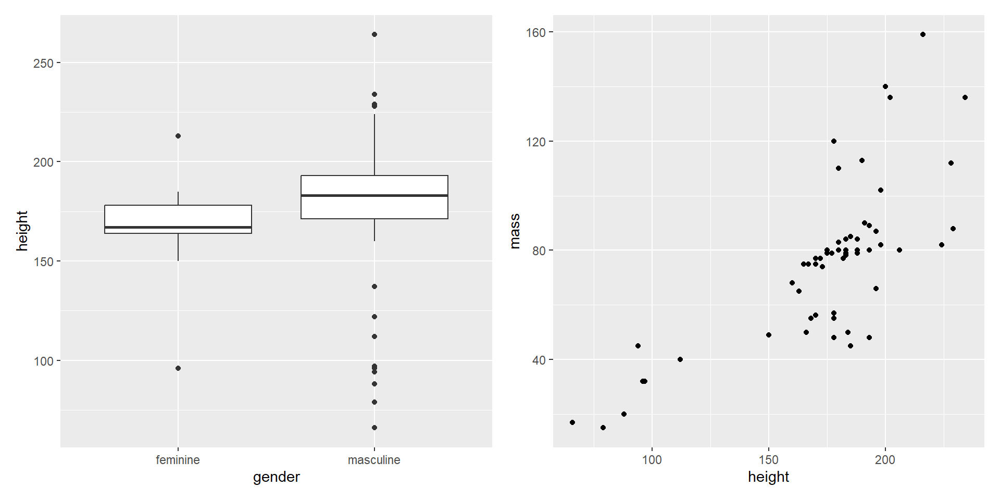
Composing with patchwork
- Combine in a column with
/
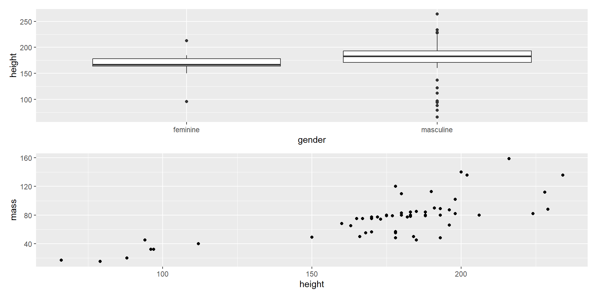
Composing with patchwork
- Group plots to increase complexity with
()
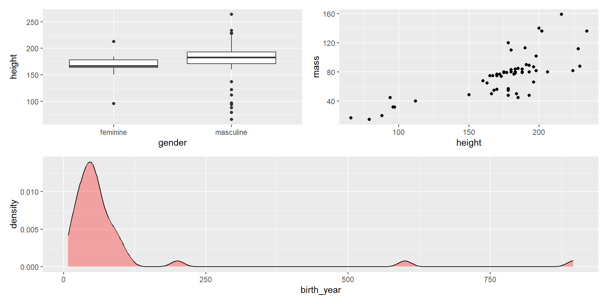
Composing with patchwork
- Group plots to increase complexity with
()
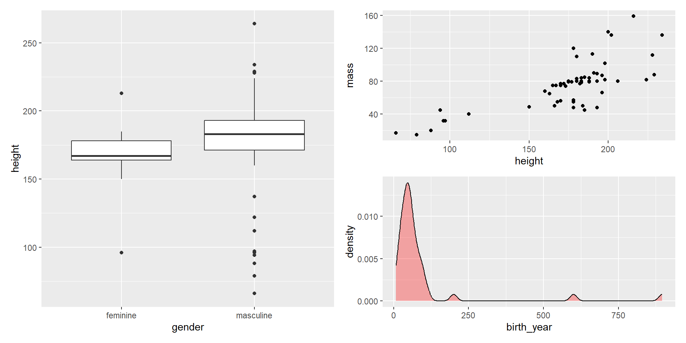
Composing with patchwork
- For more fine-scale control (and options), use
plot_layout().
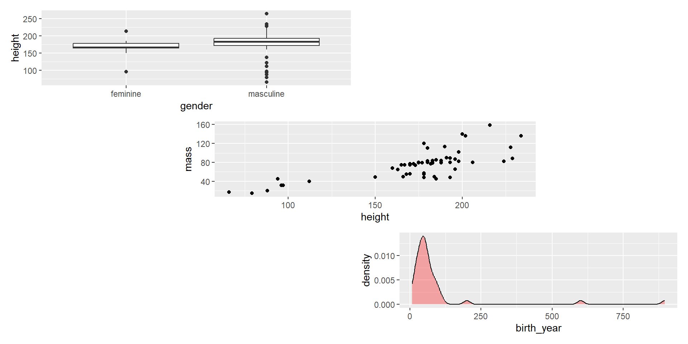
Composing with patchwork
- Add annotations with
plot_annotation().
{kind=link}
Composing with patchwork
- You can still add to existing plots…
{kind=link}
Composing with patchwork
- … but you can change the theme of all plots with
&.
{kind=link}
Composing with patchwork
- Create plots with legends.
Composing with patchwork
- Plots with legends will show the legend.
{kind=link}
Composing with patchwork
- You can also “collect” all the legends.
{kind=link}
Composing with patchwork
- You can also use
&to change all the legend positions that are being collected.
{kind=link}
Composing with patchwork
- You can include base R plots (or other plots) with
wrap_elements().
{kind=link}
Composing with patchwork
- There are lots of other excellent features.
- Check out the Getting Started page on the
patchworkwebsite for more.